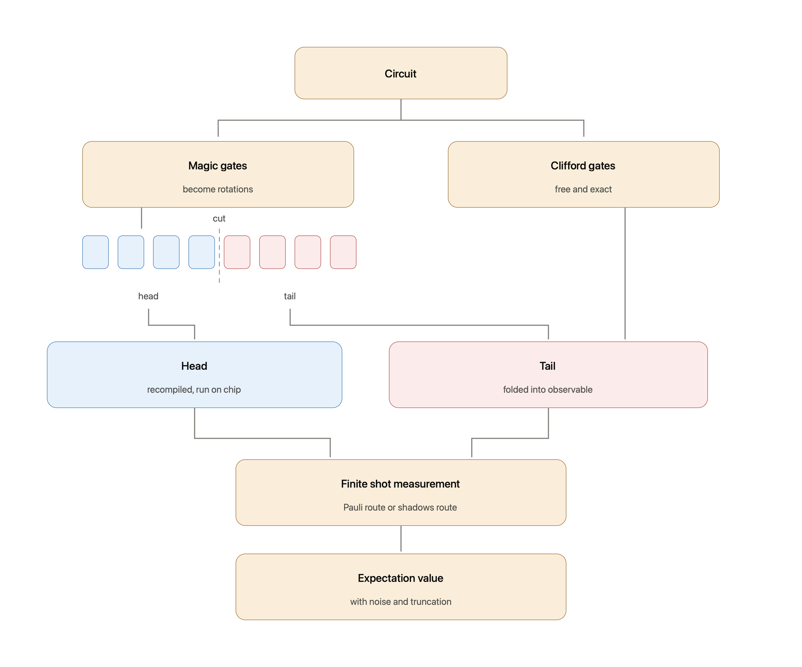
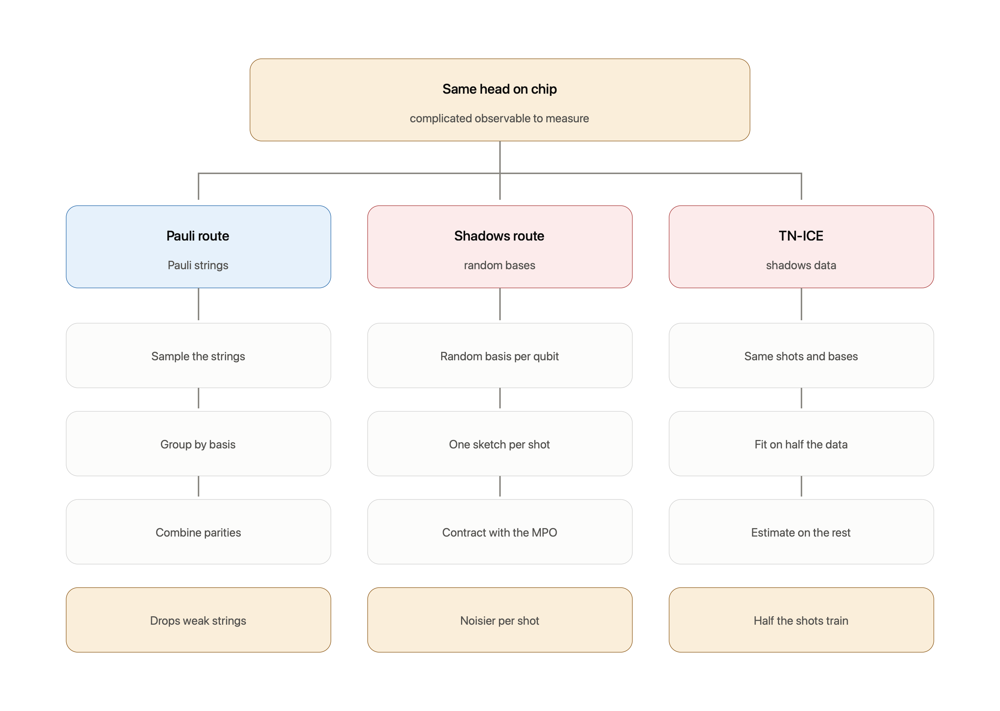
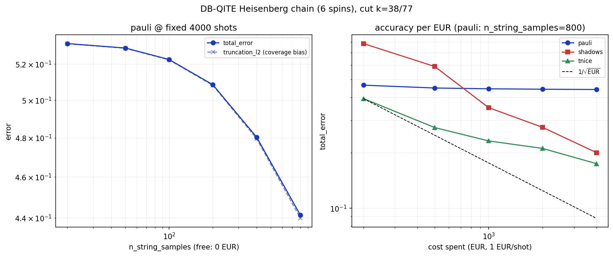

HSynthSMPO on quantum hardware¶
HSynthSMPO splits the chain of dressed Pauli rotations at a
cut: the head, next to the initial state, is resynthesized into native
gates and run on a device, while the tail, next to the observable, is folded
into the observable as an MPO.

The folded observable is then measured along one of three routes:


With the optional rustiq extra (pip install "mpstab[rustiq]") the head is
gate-count optimized; otherwise both scripts fall back to a dependency-free
decomposition.
Approximation from folding the tail¶
Sweeps the cut at a fixed bond-dimension cap and shows the error of the folded MPO growing as more rotations are pushed into the tail.
uv run python examples/scripts/quantum_hardware/hsynthsmpo_mpo_approximation.py
"""HSynthSMPO: how folding rotations into the observable MPO introduces error.
The HSynthSMPO splits the chain of dressed Pauli rotations at a cut index:
* the *head* rotations (closer to the initial state) are resynthesized with
Qiskit's Rustiq backend and applied exactly to build the state MPS;
* the *tail* rotations (closer to the observable) are folded into the
observable as an MPO by Heisenberg conjugation R^dag . O . R.
Each conjugation grows the observable MPO bond dimension, so with a finite bond
cap the folded MPO must be truncated -- this is the *only* source of
approximation in the tail. This script sweeps the cut index (hence the tail
length) at a fixed bond cap and shows the approximation growing as more
rotations are pushed into the MPO.
Uses ``resynthesize_head`` for the head 2-qubit-gate counts; with the optional
rustiq extra installed (``pip install "mpstab[rustiq]"``) this reports the
optimized head, otherwise it falls back to a dependency-free (but not
gate-count-optimized) decomposition.
"""
import numpy as np
from mpstab import HSynthSMPO
from mpstab.models.ansatze import HardwareEfficient
np.random.seed(42)
# ---------------------------------------------------------------------------
# 1. An entangling ansatz with several non-Clifford (magic) rotations.
# ---------------------------------------------------------------------------
NQUBITS = 8
NLAYERS = 3
MAX_BOND = 4 # deliberately tight so the MPO truncation is visible
OBSERVABLE = "Z" * NQUBITS
ansatz = HardwareEfficient(nqubits=NQUBITS, nlayers=NLAYERS)
hs = HSynthSMPO(ansatz, max_bond_dimension=MAX_BOND)
n_dressed = len(hs.magic_gates)
print(f"qubits={NQUBITS} layers={NLAYERS} bond cap={MAX_BOND}")
print(f"dressed (magic) rotations: {n_dressed}")
print(f"observable: {OBSERVABLE}\n")
# ---------------------------------------------------------------------------
# 2. Sweep the cut index.
#
# cut_index = k -> k rotations go into the (exact) state circuit,
# (n_dressed - k) rotations are folded into the MPO tail.
#
# So SMALLER cut_index == LONGER MPO tail == MORE approximation.
# ---------------------------------------------------------------------------
header = (
f"{'cut':>4} {'tail':>5} {'2q_head':>8} "
f"{'expval':>11} {'exp_err':>11} {'rel_F_err':>11} {'fidelity':>9}"
)
print(header)
print("-" * len(header))
for cut_index in range(n_dressed, -1, -1):
info = hs.tail_truncation(
OBSERVABLE, cut_index=cut_index, reference_max_bond=None, with_expval=True
)
expval = hs.expectation_at_cut(OBSERVABLE, cut_index, method="simulation").value
n_two_qubit_gates = hs.resynthesize_head(cut_index).n_two_qubit_gates
print(
f"{cut_index:>4} {n_dressed - cut_index:>5} "
f"{n_two_qubit_gates:>8} "
f"{expval:>11.5f} "
f"{info.expval_abs_error:>11.3e} "
f"{info.relative_frobenius_error:>11.3e} "
f"{info.fidelity_estimate:>9.5f}"
)
print(
"\nReading the table:\n"
" * cut = n_dressed (top row): the whole circuit is applied to the state,\n"
" the MPO tail is empty -> exact operator (rel_F_err = 0, fidelity = 1).\n"
" * cut = 0 (bottom row): every rotation is folded into the MPO. The exact\n"
" (untruncated) reference operator's bond dimension blows up while the\n"
" working one stays at the cap, so the truncation -- and the resulting\n"
" error -- is largest here.\n"
" * exp_err is the impact on the actual expectation value; it is typically\n"
" much smaller than the operator-level rel_F_err, because only the part of\n"
" the MPO overlapping the state matters."
)
Measuring a resynthesized head with finite shots¶
Resynthesizes every dressed rotation, measures the circuit with a finite shot
budget through the "pauli" route and checks the estimate against the
classical simulation.
uv run python examples/scripts/quantum_hardware/hsynthsmpo_rustiq_fold.py
"""HSynthSMPO: measuring a fully-resynthesized head via the "pauli" route.
Resynthesizes every dressed Pauli rotation into hardware-native gates with the
low-level ``rustiq.pauli_network_synthesis`` API (falling back to a
dependency-free CNOT-ladder decomposition if ``rustiq`` isn't installed), and
measures the resulting circuit with a finite shot budget via
``expectation_at_cut``. The resynthesis Clifford residual (if any) is folded
into the sampled Pauli terms automatically -- see the module docstring of
``mpstab.evolutors.hsynthsmpo`` for why that fold has to happen before QWC
grouping. ``method="simulation"`` (classical, no resynthesis, no shot noise) is
used here only as the reference the shot-based estimate is checked against.
With the optional rustiq extra installed (``pip install "mpstab[rustiq]"``)
the head is gate-count-optimized; otherwise the CNOT-ladder fallback is used, at
the cost of that saving (see ``resynthesize_head``'s docstring).
"""
import numpy as np
import stim
from mpstab.evolutors.hsynthsmpo import HSynthSMPO
from mpstab.models.ansatze import HardwareEfficient
np.random.seed(42)
NQUBITS = 6
NLAYERS = 2
OBSERVABLE = "Z" * NQUBITS
ansatz = HardwareEfficient(nqubits=NQUBITS, nlayers=NLAYERS)
# rotations_only skips the eager MPS precompute in __post_init__ -- only the
# dressed rotations are needed here, so construction stays cheap regardless of
# system size (see docs/guides/rustiq_resynthesis.rst).
hs = HSynthSMPO.rotations_only(ansatz)
n_dressed = len(hs.magic_gates)
print(f"qubits={NQUBITS} layers={NLAYERS} dressed rotations={n_dressed}")
# ---------------------------------------------------------------------------
# 1. Resynthesize ALL dressed rotations into a hardware-native circuit.
# ---------------------------------------------------------------------------
resynth = hs.resynthesize_head(cut_index=n_dressed)
print(f"\nresynthesis method: {resynth.method}")
print(
f"resynthesized head circuit: {resynth.n_gates} gates ({resynth.n_two_qubit_gates} two-qubit)"
)
# ---------------------------------------------------------------------------
# 2. Measure it with a finite shot budget, and compare against the exact
# (no-resynthesis, no shot-noise) reference.
# ---------------------------------------------------------------------------
exact = hs.expectation_at_cut(OBSERVABLE, n_dressed, method="simulation").value
result = hs.expectation_at_cut(
OBSERVABLE, cut_index=n_dressed, method="pauli", n_shots=20000, seed=0
)
print(
f"\nexpectation_at_cut({OBSERVABLE!r}, method='simulation') = {exact:+.6f}"
" (classical, reference only)"
)
print(f"expectation_at_cut({OBSERVABLE!r}, method='pauli') = {result!r}")
print(
f"|estimate - exact| = {abs(result.value - exact):.3e} (total_error = {result.total_error:.3e})"
)
# ---------------------------------------------------------------------------
# 3. Gate-count profiling: resynthesis cost of increasingly large prefixes of
# the dressed-rotation chain.
# ---------------------------------------------------------------------------
print(f"\n{'cut':>5} | {'head total':>10} {'head 2Q':>8} {'tail trivial':>12}")
for cut in sorted({0, n_dressed // 2, n_dressed}):
r = hs.resynthesize_head(cut)
trivial = r.residual_tableau == stim.Tableau(hs.nqubits)
print(f"{cut:>5} | {r.n_gates:>10} {r.n_two_qubit_gates:>8} {str(trivial):>12}")
print(
"\nNote: cut < n_dressed leaves rotations out of the resynthesis; those "
"are still non-Clifford dressed rotations and are folded (approximately, "
"as a truncated tensor-network operator) into the tail MPO by the "
"'pauli'/'shadows' routes exactly as an un-resynthesized cut would be. "
"For a look at that approximation on its own, see "
"examples/scripts/quantum_hardware/hsynthsmpo_mpo_approximation.py, which uses "
"HSynthSMPO.tail_truncation."
)